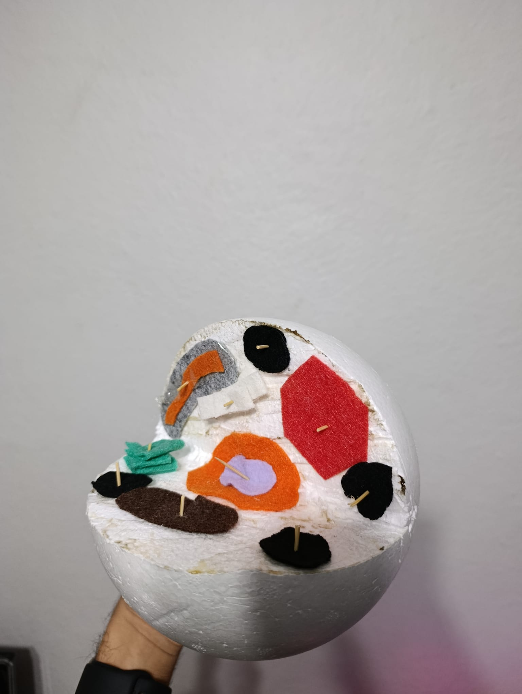
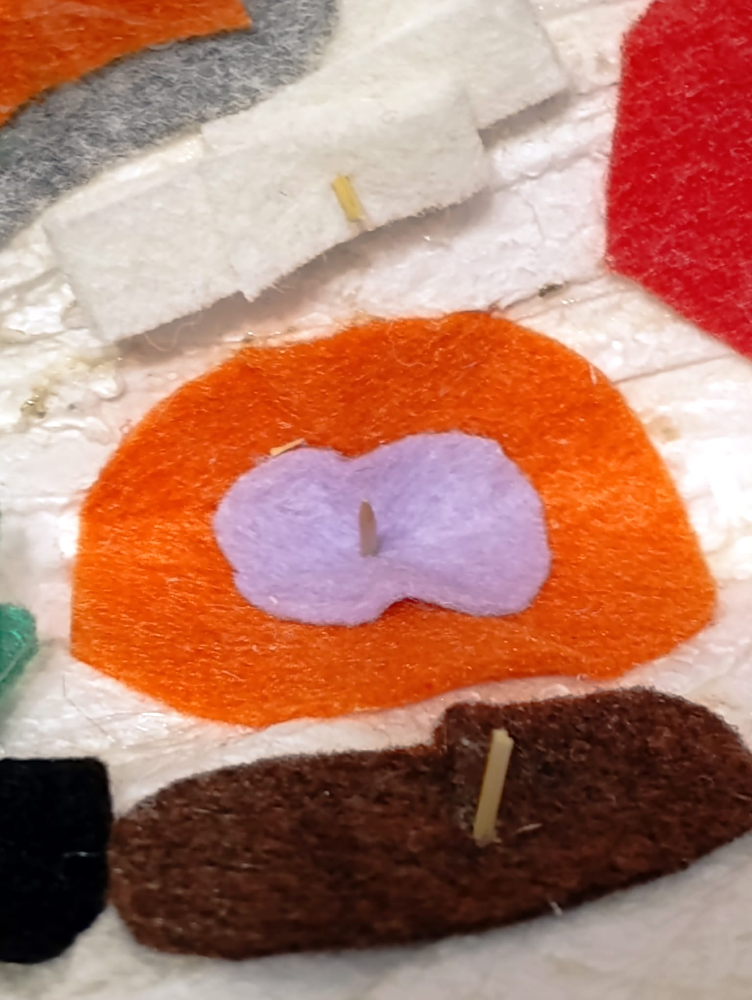
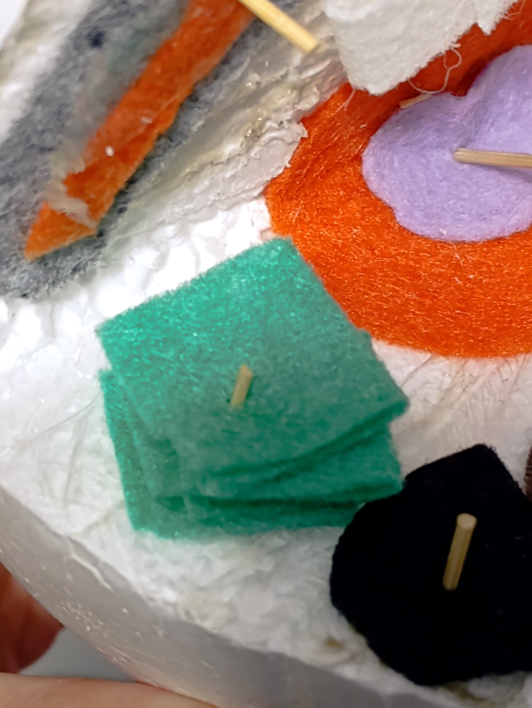
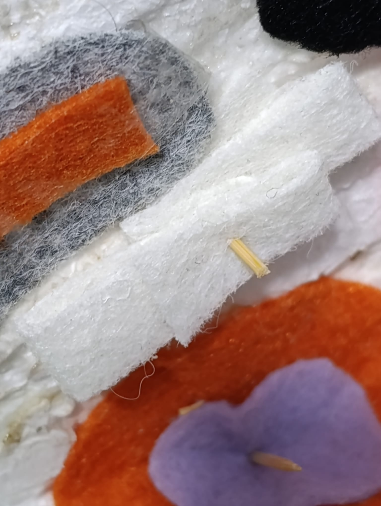
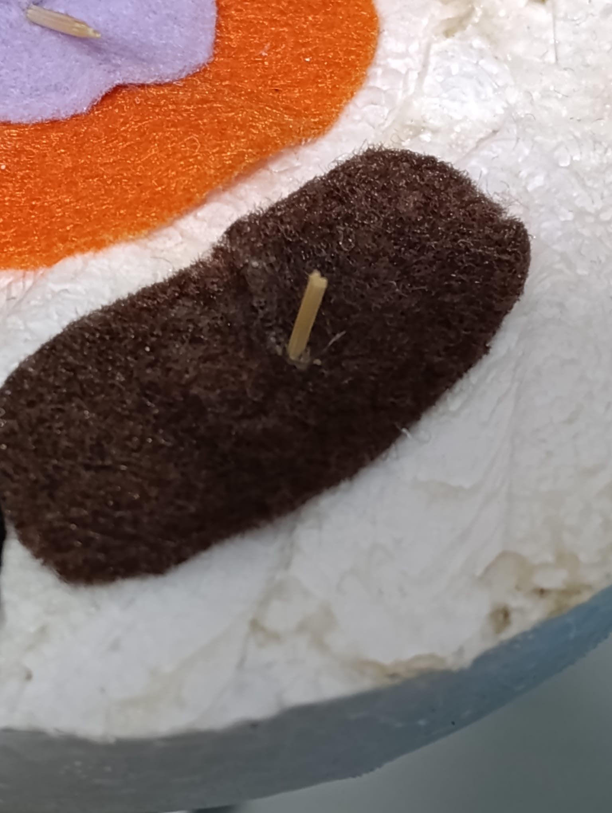
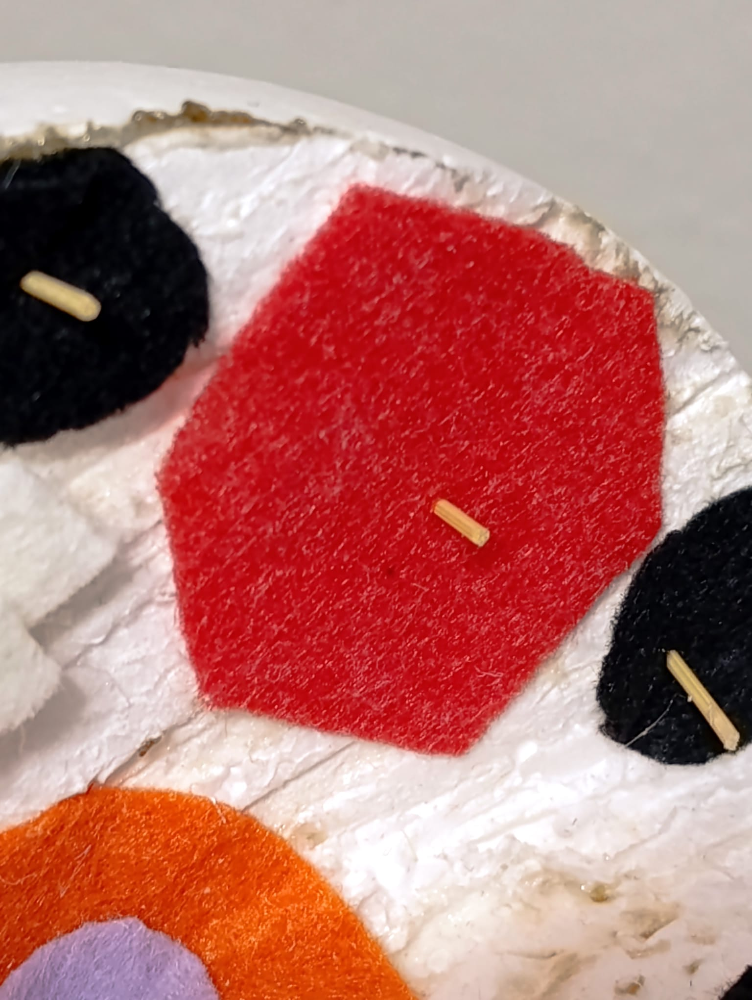
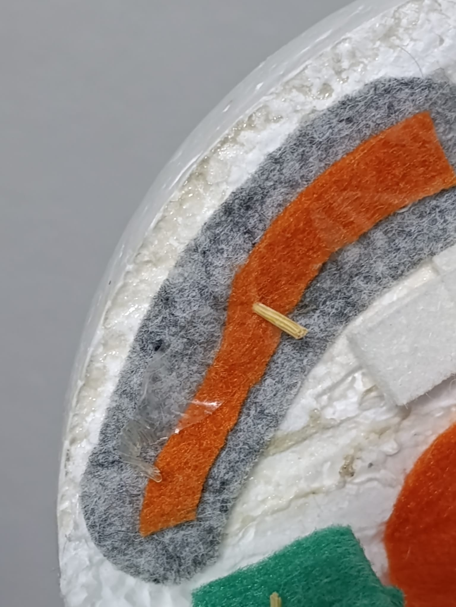
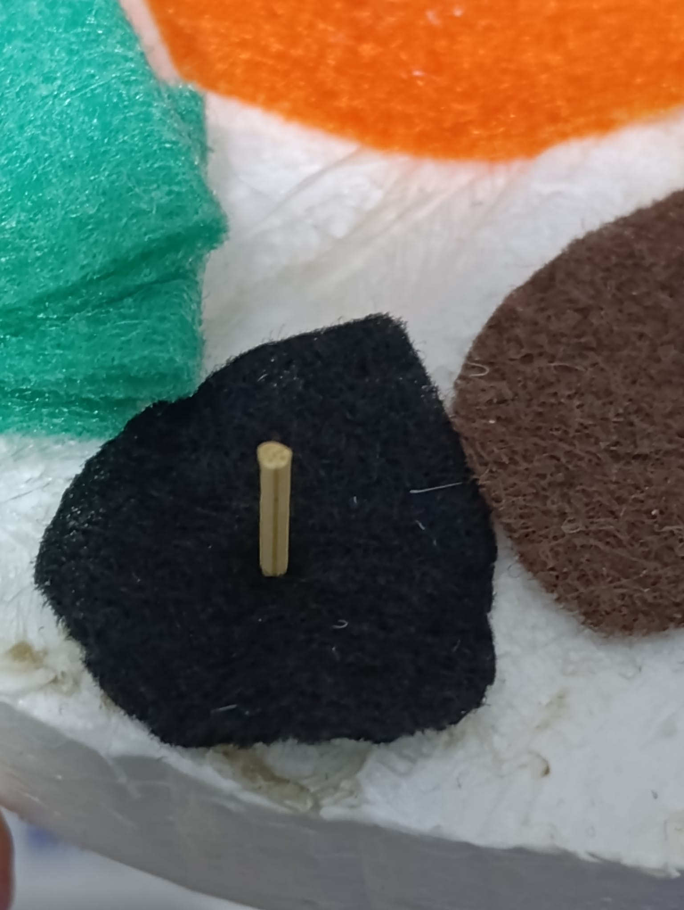

Yaşamın en küçük ve en mucizevi yapı taşı olan hücrenin derinliklerine iniyoruz. Organellerin görevlerini ve muazzam uyumunu yakından inceleyin.
Keşfe Başla

Hücrenin yönetim ve kalıtım merkezidir. DNA'yı barındırır ve hücrenin bölünmesi dahil tüm yaşamsal faaliyetlerini yönetir.

Hücre içi madde taşıma ve iletim ağını oluşturur. Çekirdek zarı ile hücre zarı arasında uzanır.

Hücrenin salgı üretim ve paketleme merkezidir. Üretilen maddeleri veziküller halinde gideceği yere gönderir.

Hücrenin depo organelidir. Besinleri, atıkları ve suyu depolar. Bitki hücrelerinde büyük ve az, hayvan hücrelerinde küçük ve çoktur.

Hücre içi sindirim organelidir. İçerdiği güçlü enzimler sayesinde büyük molekülleri parçalayarak sindirir.

Hücrenin enerji santralidir. Oksijenli solunum yaparak hücrenin ihtiyaç duyduğu ATP enerjisini üretir.

Hücrenin protein sentez fabrikasıdır. Tüm canlı hücrelerde bulunur ve zarsız bir yapıya sahiptir.
Hücre yapısı ve fonksiyonları hakkında daha detaylı bilgi için hazırlanan biyoloji sunumumuzu inceleyebilirsiniz.